El accidentado fin de fiesta de Nochevieja en la plaza de Catalunya se agravó por la nula presencia de agentes del Cuerpo Nacional de Policía , según fuentes del Ayuntamiento de Barcelona.
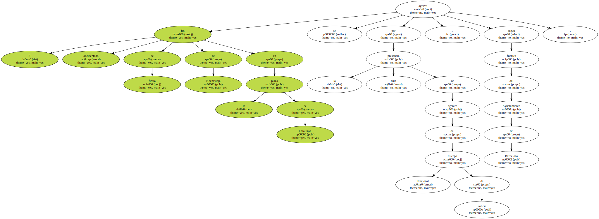Los robos y altercados registrados durante la celebración retrasaron el operativo de limpieza de la plaza , cubierta de botellas rotas utilizadas como arma en algunas trifulcas.
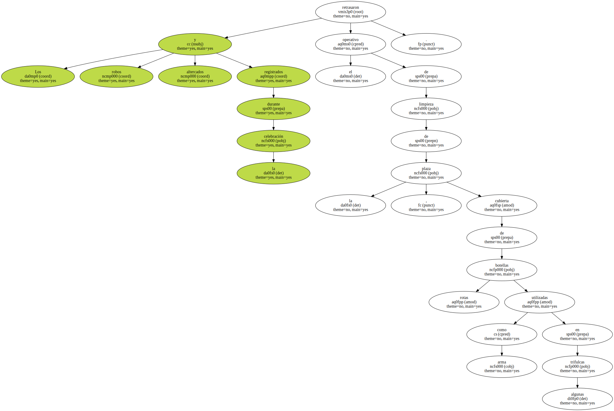Tampoco ayudó el dispositivo de Mantenimiento y Servicios , que planeó la llegada del grueso de las brigadas de limpieza tres horas y media Después de la fiesta.
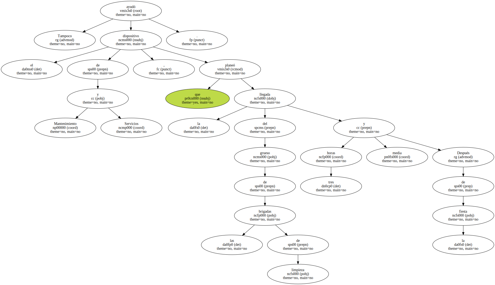La concejala de Seguridad y Movilidad , Carme San Miguel , consideró ayer que el sarao transcurrió de forma " intensa y alegre ".
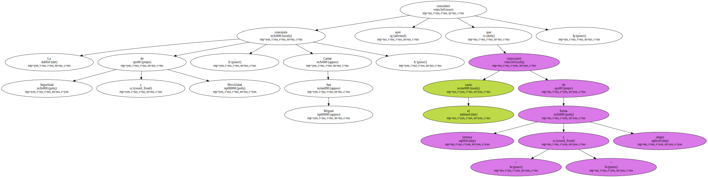A través de emisoras de radio , destacó que la Guardia Urbana - - desbordada - - solicitó en vano la presencia de la policía , a la vista de los numerosos hurtos y altercados registrados.
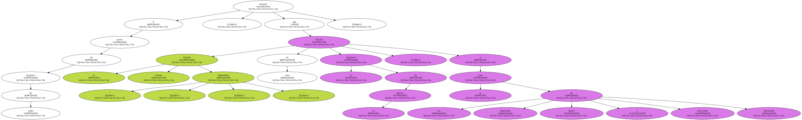La falta de agentes hasta última hora propició disputas y agresiones entre grupos de ladrones y víctimas.
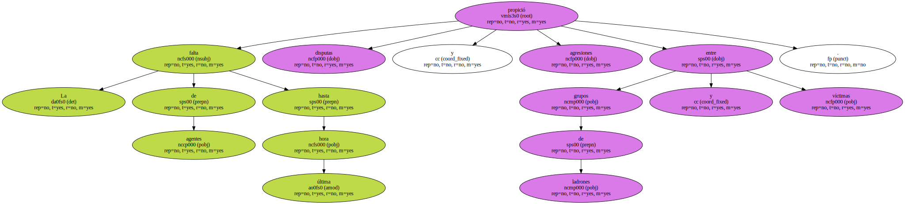El 061 realizó 270 intervenciones de todo tipo , mientras que la Cruz Roja realizó más de 50 traslados a hospitales.
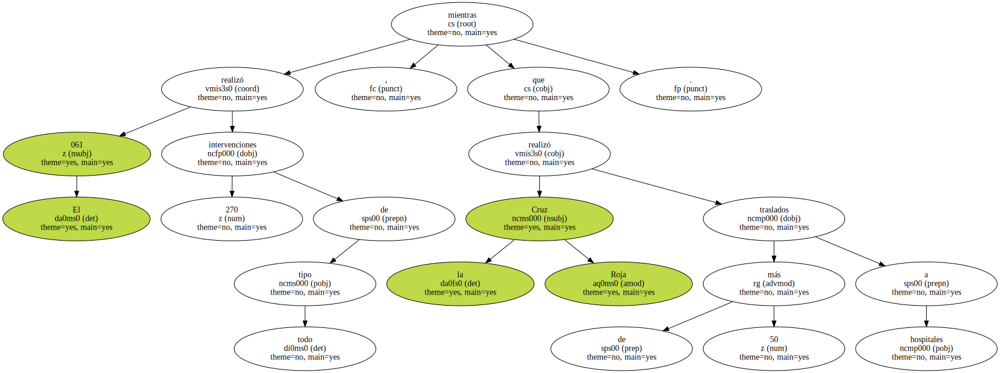La situación se complicó al generarse un círculo vicioso : el tráfico no se pudo normalizar en la zona porque estaba todo sembrado de desperdicios rotos y la limpieza no se activó por la conflictividad que registraba la plaza.
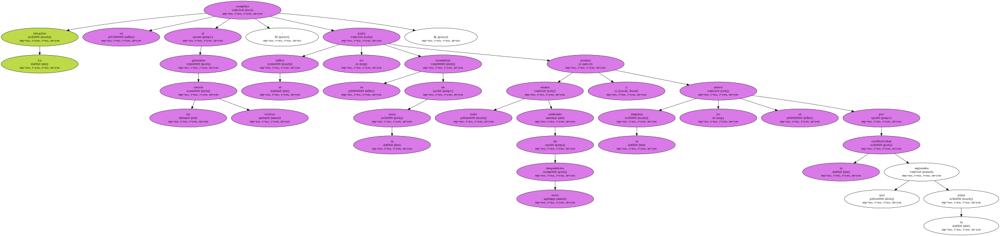Al margen de los incidentes , el operativo de limpieza se reveló descompensado.
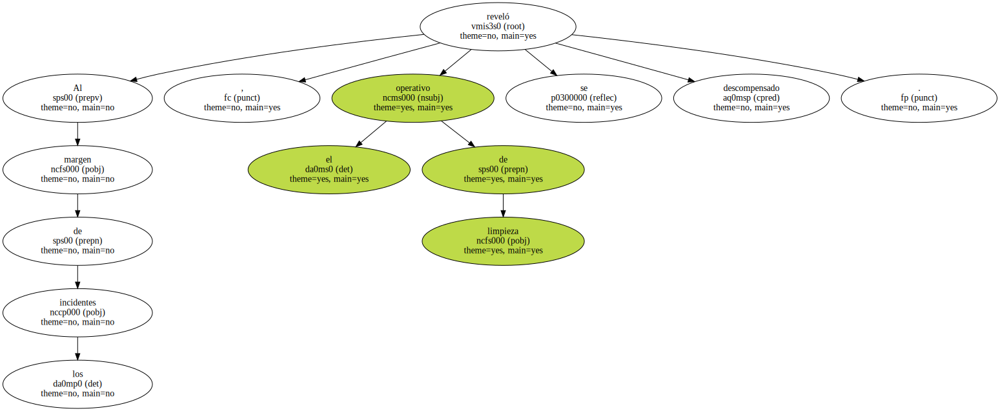El gerente de Mantenimiento y Servicios dijo ayer que el plan funcionó según lo previsto.
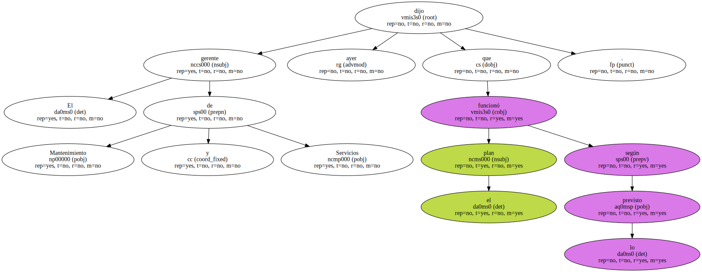La previsión , sin embargo , fue insuficiente : sólo seis operarios llegaron entre la una y la 1.30 de la madrugada con dos máquinas barredoras.
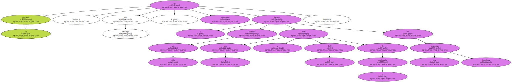Su función era dedicarse al perímetro de la plaza e iniciar la limpieza del interior cuando ésta se desalojase.
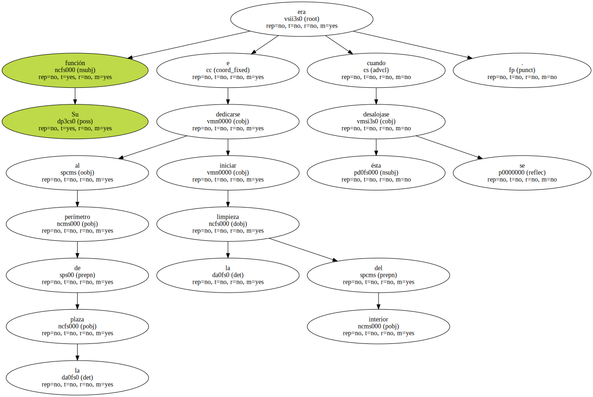Ante el pobre despliegue , incluso representantes municipales que seguían en la plaza a las dos mostraron su desaprobación.
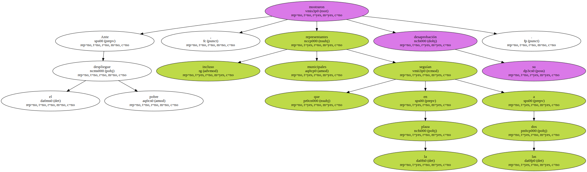Otros 20 operarios , señaló Frigola , debían llegar entre las 4.30 y las cinco de la mañana , provistos de dos camiones de recogida , dos cisternas de limpieza y dos barredoras.

En la práctica , los trabajadores llegaron escalonadamente y la operación se ralentizó.
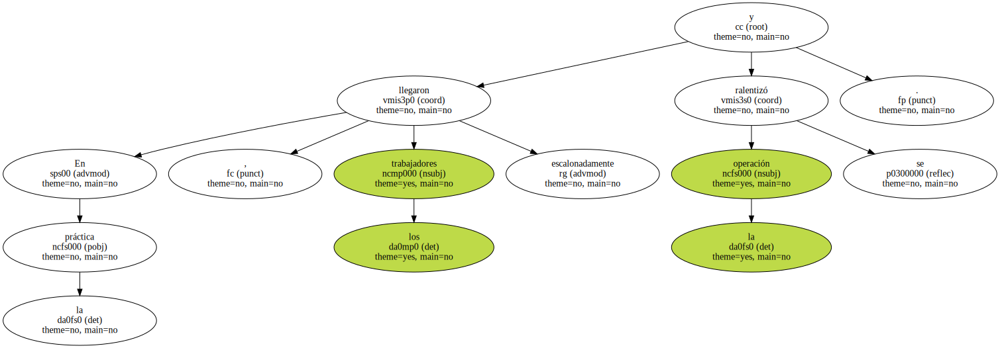De poco habían servido los 10 contenedores instalados en la zona.
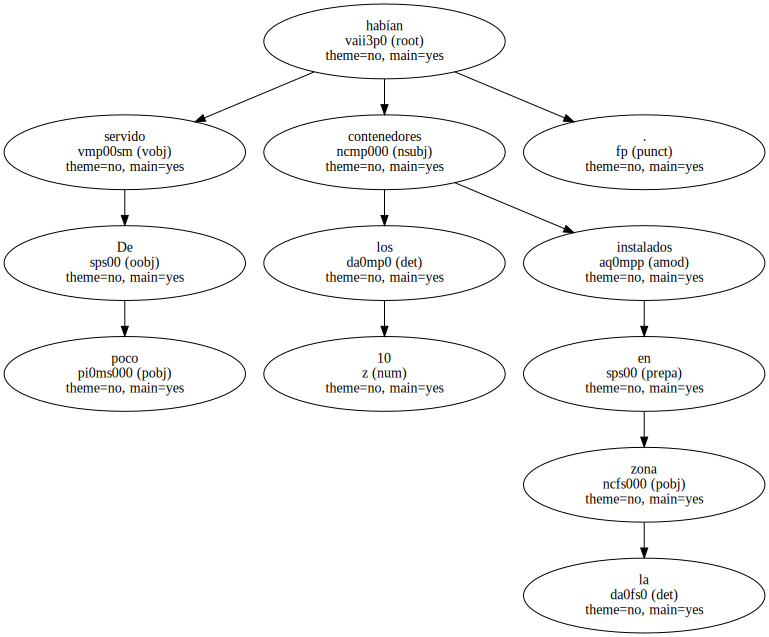En Ciutat Vella la recogida también se vio afectada por el accidente de un camión de basuras en dirección a Barcelona.
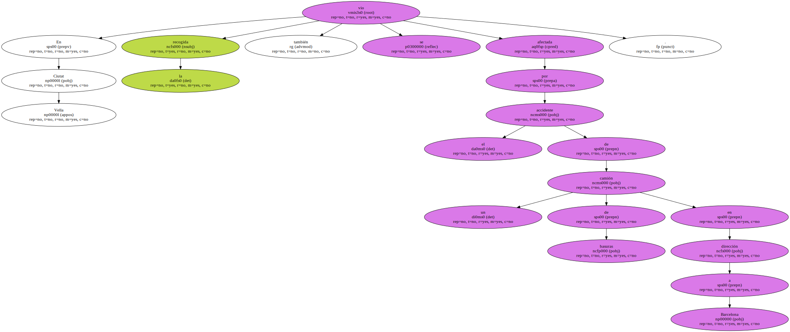Las quejas ciudadanas motivaron un despliegue extra la mañana del día 1.
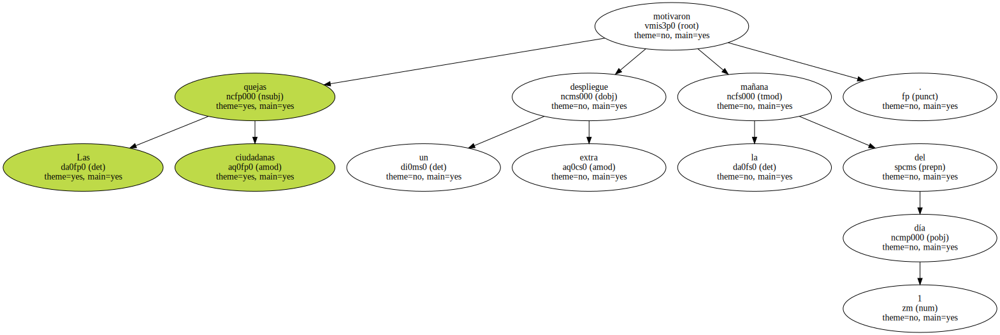El Ayuntamiento ha pedido un informe a la concesionaria FCC sobre los trabajos de esa noche.
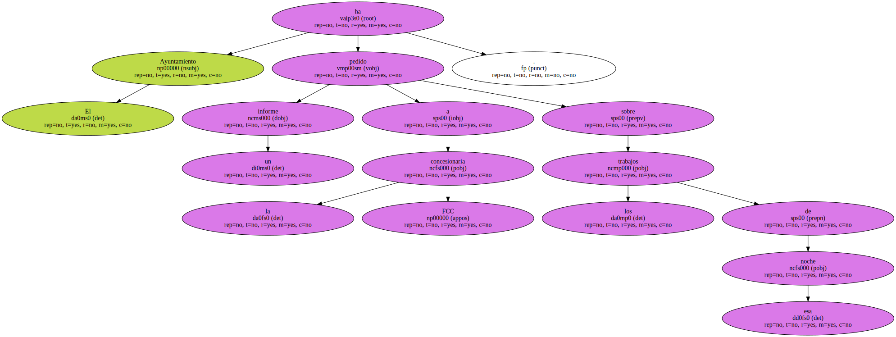El grupo municipal de CiU criticó ayer duramente la organización del evento popular.
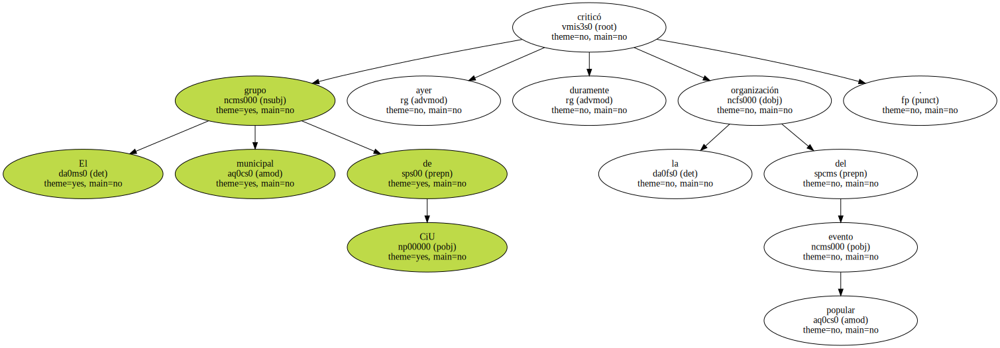